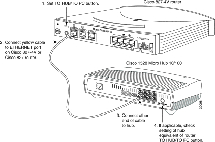
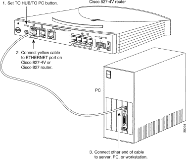
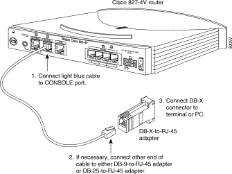
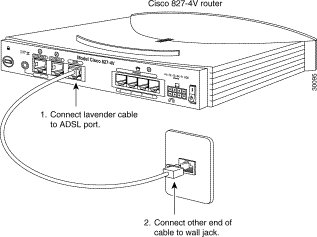
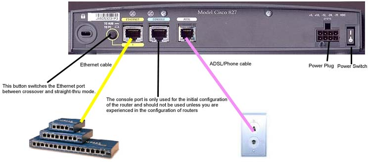

Nel seguito analizzeremo le caratteristiche specifiche del Router Cisco 827, appartenente alla famiglia serie 800:
Memory
/ Flash - 12 MB (installed) / 20 MB (max) - flash
Analog Ports Qty / Digital Ports Qty - 1
Memory / RAM - 16 MB (installed)
/ 32 MB (max)
Network / Transport Protocol - IPX/SPX
Digital Signaling Protocol - ADSL
Remote Management Protocol - SNMP,
HTTP
Switching Protocol - Ethernet
Features - Cisco IOS
Compliant Standards - IEEE 802.3-LAN, ANSI T1.413
Connectivity Technology - Cable
Data Transfer Rate - 10 Mbps
Data Link Protocol - Ethernet
Device Type - Router
Warranty - 1 year warranty
Power - AC 110/220 V ± 10% ( 50/60 Hz )
Processor - 1 x Motorola 50 MHz RISC
Weight - 1.5 lbs
Dimensions (WxDxH) - 9.7 in x 8.3 in x 2 in
Porte/Connettori
(1)
RJ-45 port for 10BaseT
Ethernet
(1) ADSL interface
Memorie
Default
DRAM1 Memory - 16 MB
Maximum DRAM Memory - 32 MB
Default Flash2 Memory - 12 MB
Maximum Flash Memory - 20 MB
Software:
Memory
Requirements for Cisco 827 IOS Feature Sets:
IP: 12 MB Flash, 16 MB DRAM
IP Plus: 12 MB Flash, 16 MB DRAM
IP/IPX/Plus: 12 MB Flash, 20 MB DRAM
IP Firewall: 12 MB Flash, 20 MB DRAM
IP Firewall Plus: 12 MB Flash, 20 MB DRAM
VPN IPX Feature Set: IP/IPX/Plus/Firewall/IPSec 3DES: 12 MB Flash, 20 MB DRAM
VPN Feature Set: IP/Plus Firewall IPSec 56-bit DES: 12 MB Flash, 20 MB DRAM
Sul fronte del router Cisco 827 sono presenti diversi led con il seguente significato:
| LED | Colore | Significato |
|---|---|---|
| OK LED |
Verde |
Acceso quando il router è ON e quando il router ha completato la procedura di self-test ed è pronto a funzionare |
| ADSL CD |
Verde |
Acceso quando la componente ADSL è fisicamente connessa. Lampeggia quando la connessione ha un problema. |
| ADSL RXD |
Verde |
Lampeggia quando la porta ADSL riceve dati. |
| ADSL TXD |
Verde |
Lampeggia quando la porta ADSL trasmette dati. |
| ETHERNET 1 |
Verde |
Acceso quando la componente fisica Ethernet è connessa. Lampeggia quando la connessione ha un problema. |
| ETHERNET RXD |
Verde |
Lampeggia quando la porta Ethernet riceve pacchetti. |
| ETHERNET TXD |
Verde |
Lampeggia quando la porta Ethernet trasmette pacchetti. |
Collegamenti
1) Collegamento ad un HUB (presa gialla):

2) Collegamento diretto a un PC (presa gialla):

3) Collegamento cavo console (presa azzurra):

4) Collegamento alla presa telefonica (presa bianca):

Riassumendo avremo:
-
Porta gialla cavo Ethernet (si usa il cavo streight sia per i collegamenti diretti
al pc che per quelli ad una altro apparato - hub o switch)
- Porta azzurra cavo console (roll over)
- Porta bianca cavo telefonico
